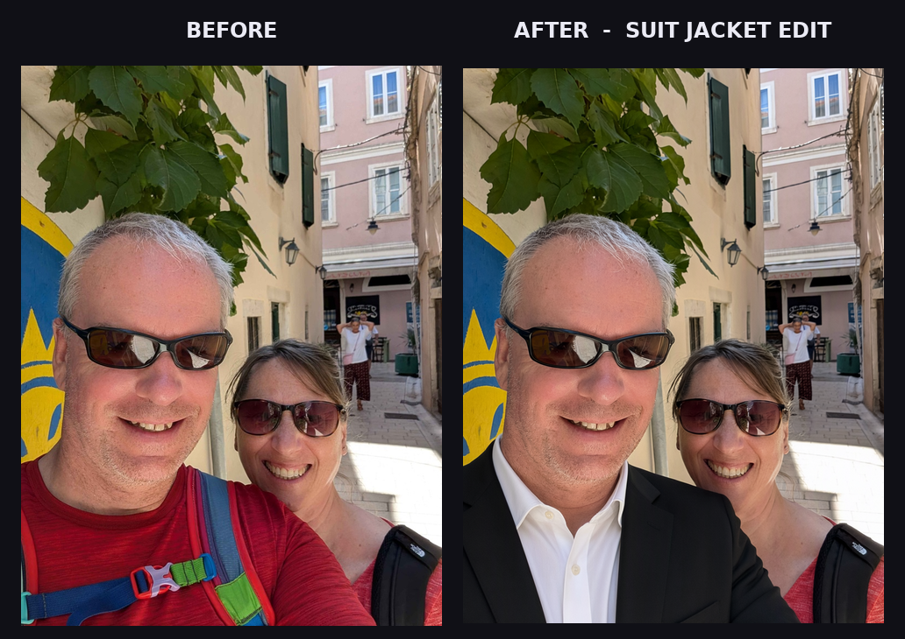

Image Editing Enablement with Qwen-Image 2.1: Suit Jacket Transfer
Editing a photo is one of the most accessible ways to show what an image model can actually do for people. No synthetic prompts, no abstract benchmarks — just a real picture you took, a concrete change you want, and the ability to make it happen with natural language.
This dispatch documents how the qwen-image-edit skill turns Qwen-Image 2.1 into an enablement tool for everyday image editing tasks: instruction edits, multi-reference style and clothing transfer, background removal, and relighting — all through a single Python CLI.
The Skill
The skill lives at /opt/data/skills/creative/qwen-image-edit/ and wraps the official ComfyUI workflows for Qwen-Image 2.1 editing:
- Instruction Edit — single image + natural language prompt.
- Multi-reference Transfer — up to 10 reference images, addressed as
<image1>,<image2>, etc. - Background Removal — subject isolation workflow.
- Relighting — lighting direction and mood prompts.
The CLI is intentionally simple. The multi-reference flow that powers this example is:
python3 /opt/data/skills/creative/qwen-image-edit/scripts/edit.py \
--image /path/to/person.png \
--image /path/to/jacket.png \
--prompt "Keep the character and pose in <image1> unchanged, put this jacket from <image2> on the character" \
--mode multi-ref \
--output-dir /opt/data/outputsNo manual JSON editing. No UI clicks. The skill builds the ComfyUI workflow, queues it, polls for completion, and writes a PNG to disk.
The Example
The input is a street selfie taken on Mediterranean cobblestones: two people in sunglasses, mid-day sun, warm walls behind them. The goal was a simple wardrobe edit — give the man in the foreground a black suit jacket while preserving everything else.

The composite above shows the two results side-by-side. On the left is the original capture; on the right is the edited output where the man's red t-shirt and backpack straps have been replaced with a black suit jacket, with consistent lighting and shadow continuity.
Why This Matters for Enablement
People don't want to learn ComfyUI node graphs. They want to say "put this jacket on the person in this photo" and get a result they can use. The skill pattern compresses model setup, workflow selection, host resolution, polling, and download into a single documented command.
For creators and small teams, that means:
- Fast iteration on wardrobe and styling ideas without reshoots.
- Consistent subject preservation across edits — faces, pose, background stay intact.
- Reproducible pipelines that can be scripted in batch jobs or cron workflows.
What We Didn't Show
This article focuses on enablement, not a catalog of experiments. Other edit attempts — background removal tests, relighting trials, and unrelated test images — were omitted intentionally to keep the narrative focused on the core capability: clothing transfer with multi-reference.
The pipeline is live, the skill is in the registry, and the shared ComfyUI endpoint is stable. Next dispatches will cover batch editing workflows and integration with content pipelines.